Localização
Shenzhen está localizada no Delta do Rio das Pérolas, na fronteira com Hong Kong ao sul, Huizhou ao norte e nordeste, Dongguan ao norte e noroeste. Lingdingyang e Rio das Pérolas, a oeste, e Mirs Bay, a leste e aproximadamente 100 quilômetros a sudeste da capital da província de Guangzhou. Mais de 160 rios ou canais fluem através de Shenzhen. Existem 24 reservatórios dentro dos limites da cidade, com uma capacidade total de 525 milhões de toneladas.Rios notáveis em Shenzhen incluem o rio Shenzhen, o rio Maozhou e o rio Longgang.
Econômica
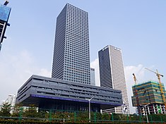
Shenzhen foi a primeira das zonas econômicas especiais a ser estabelecida pelo líder supremo Deng Xiaoping. Shenzhen recebe o privilégio de adotar políticas de capitalismo de mercado sob o disfarce de "socialismo com características chinesas", diferentemente de outras cidades da China continental, que se baseiam em uma economia planejada.
Em 2017, Shenzhen possui um PIB nominal de 2,42 trilhões de RMB (HK$ 2,87 trilhões), que recentemente superou o PIB da vizinha Hong Kong, de HK$ 2,85 trilhões, e o PIB de Guangzhou, de 1,98 trilhão de RMB, sendo que a produção econômica de Shenzhen é a terceira maior cidade do país, atrás apenas de Xangai e Pequim. Além disso, o crescimento médio do PIB de 8,8% entre 2016 e 2017 superou o de Hong Kong e Singapura, com 3,7% e 2,5%, respectivamente. Com uma capitalização de mercado de US$ 2,5 trilhões em 30 de novembro de 2018, a Bolsa de Valores de Shenzhen é a 8ª maior bolsa do mundo.
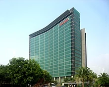
A indústria local é descrita pelo Escritório Municipal de Estatísticas como sendo sustentada por suas indústrias em quatro pilares: alta tecnologia, finanças, logística e cultura.Shenzhen é conhecida principalmente por sua indústria de alta tecnologia, que possuía um valor de 585,491 bilhões de RMB (US$ 82,9 bilhões) em 2015, um aumento de 13% em relação ao ano passado. Do PIB nominal de 1.750.299 bilhões de RMB em 2015, o setor de alta tecnologia representa 33,4%. Shenzhen é o lar de várias empresas de tecnologia de destaque, como a empresa de telecomunicações e eletrônica Huawei. Como resultado, Shenzhen é apelidada pelos meios de comunicação como "Vale do Silício da China" ou "Vale do Silício do Hardware" do mundo
Transporte
Devido à sua proximidade a Hong Kong, Shenzhen possui o maior número de portas de entrada e saída, o maior número de funcionários de entrada e saída e o maior volume de tráfego na China.
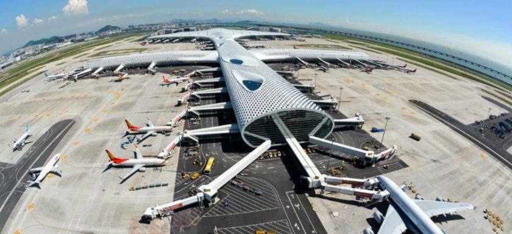
Em relação ao transporte aéreo, Shenzhen é servido por seu próprio Aeroporto Internacional de Shenzhen Bao'an e pelo Aeroporto Internacional de Hong Kong. Localizado a 35 quilômetros do centro da cidade, o Aeroporto Internacional de Shenzhen Bao'an serve como o principal hub das companhias aéreas de passageiros Shenzhen Airlines e Donghai Airlines e o principal hub das companhias aéreas de carga Jade Cargo International, SF Airlines, e UPS Airlines. O aeroporto movimentou 49.348.950 passageiros, 355.907 aeronaves e 1.218.502,2 cargas em 2018, tornando-o o quinto mais movimentado da China em termos de tráfego de passageiros e o quarto aeroporto mais movimentado do país em termos de tráfego de aeronaves e cargas. Os passageiros também podem pegar balsas o Aeroporto Internacional de Hong Kong.
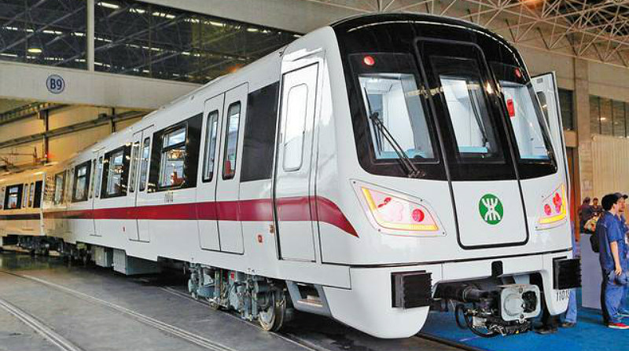
Shenzhen desenvolveu um extenso sistema de transporte público, cobrindo metrô, ônibus e táxis, a maioria dos quais pode ser acessada usando um cartão Shenzhen Tong ou códigos QR gerados pelos mini programas WeChat. O metrô de Shenzhen tem oito linhas, 205 estações e 292,6 quilômetros de trilhos operando em 8 linhas, tornando-o o 7º sistema de metrô mais longo da China. A média diária de passageiros no metrô em 2016 é de 3,54 milhões de passageiros, o que representa um terço dos usuários de transporte público na cidade. O metrô também opera um sistema de bondes no distrito de Longhua.
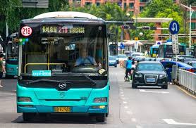
Em agosto de 2019, o sistema de ônibus da cidade abrange mais de 900 linhas, com um total de mais de 16.000 veículos elétricos, a maior frota do mundo. O sistema é operado por várias empresas. Existem dois tipos de táxis que servem Shenzhen e ambos podem ser distinguidos por sua cor: táxis de combustível são vermelhos e verdes e táxis elétricos são azuis. Em novembro de 2019, 99% dos táxis da cidade já eram elétricos.
Educação
Antes da década de 1980, o sistema educacional de Shenzhen se baseava principalmente no ensino médio primário, sem residentes admitidos em uma universidade.
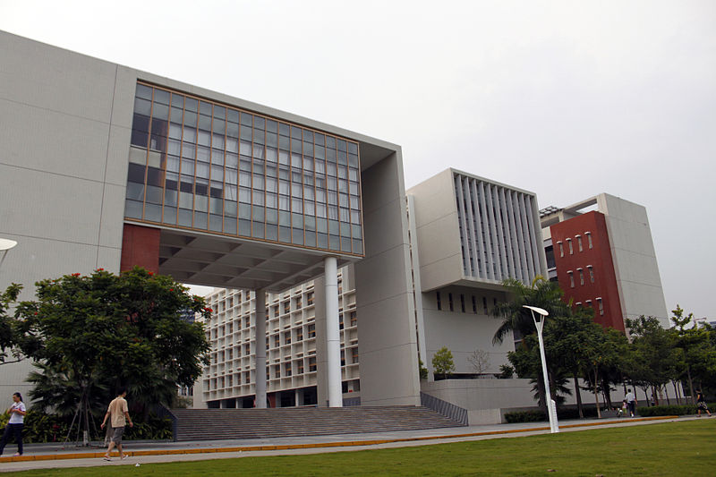
Em meados da década de 1980, quando o ensino médio se tornou popular, houve uma necessidade de instituições de ensino superior na cidade.Inaugurada em 1983, a Escola Normal de Shenzhen, posteriormente transferida para a Faculdade Normal de Shenzhen, treinou estudantes para se tornarem professores da escola primária. Aprovada pelo Conselho de Estado no mesmo ano, a Universidade de Shenzhen tornou-se a primeira instituição de ensino superior abrangente em tempo integral da cidade.
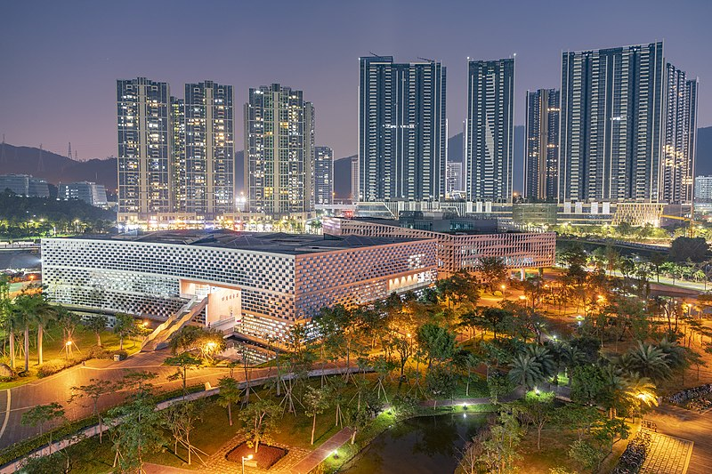
Em 1999, o Governo Municipal de Shenzhen criou o Parque Universitário Virtual no Parque de Ciência e Tecnologia, onde professores das principais universidades da China ensinavam estudantes de pós-graduação.Mais universidades seriam estabelecidas desde então, como a Universidade de Ciência e Tecnologia do Sul da China em 2011 e o Instituto de Tecnologia de Shenzhen em 2018. Outras universidades estabeleceriam seus campi na cidade, como a Universidade Chinesa de Hong Kong, o Instituto de Tecnologia Harbin e a Universidade Estatal de Moscou.
A educação obrigatória de 9 anos em Shenzhen é gratuita. Escolas secundárias, como a Escola Secundária de Shenzhen, a Escola Experimental de Shenzhen, a Escola de Línguas Estrangeiras de Shenzhen e a Escola Secundária de Shenzhen, todas com uma taxa on-line de mais de 90%, são apelidadas de "quatro escolas famosas". Em 2015, Shenzhen possuía 12 instituições de ensino superior, 335 escolas secundárias gerais, 334 escolas primárias e 1.489 pré-escolas. Apesar do número de universidades e escolas da cidade, o sistema educacional de Shenzhen falha em acompanhar o rápido desenvolvimento da metrópole.
Empresas
Huawei
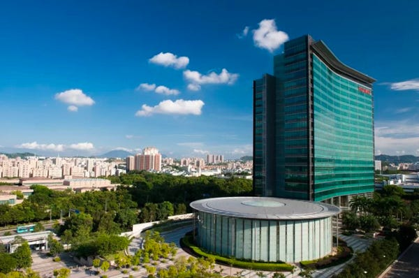
Há alguns anos, a Huawei (maior fabricante mundial de equipamentos para redes e telecomunicações) ocupa essa posição, tendo superado tradicionais gigantes internacionais do ramo. A empresa é líder na produção de soluções integradas para redes de telecomunicação, TI, dispositivos inteligentes e serviços de nuvem.
Quando se trata da tecnologia 5G, por exemplo, praticamente não há um segundo colocado para comparar com a Huawei. Na verdade, a empresa é a única que pode fornecer sistemas 5G end-to-end, o que inclui estações-base sem fio, antenas e chips de autodesenvolvimento.
Por sua vez, a empresa vem trabalhando em Inteligência Artificial (IA) há dez anos, produzindo soluções para pessoas, empresas e governos em todo o mundo.
O famoso smartphone Mate 20 Pro incorpora recursos incríveis de IA à sua câmera, como um aplicativo capaz de traduzir expressões faciais e emoções em sons correspondentes, para uso de deficientes visuais.
HAX
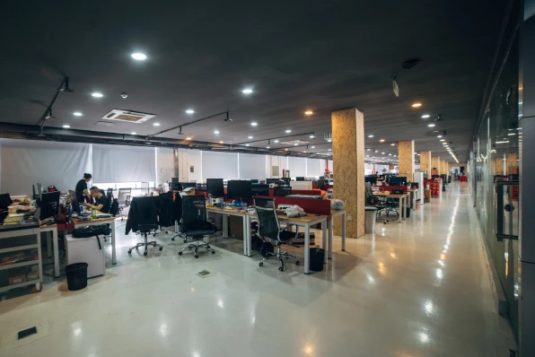
A explosão de startups tem na HAX sua maior aceleradora no setor de hardware — o universo de Shenzhen. A empresa acelera 200 startups ao mesmo tempo durante os seis meses que devem passar na cidade.
A HAX oferece um ambiente único para o co-desenvolvimento de tecnologia, design, engenharia e execução de fabricação. Entre as mais famosas startups que passaram pela aceleradora, estão as companhias robóticas que alcançaram sucessos milionários no mercado:
Makeblockcom
Foco na integração entre robótica e educação
Simbe Robotics
Criadora de robôs autônomos que realizam auditoria e análise de prateleiras de produtos
Dispatch
Onde nasceu o robô delivery utilizado pela Amazon
DJI
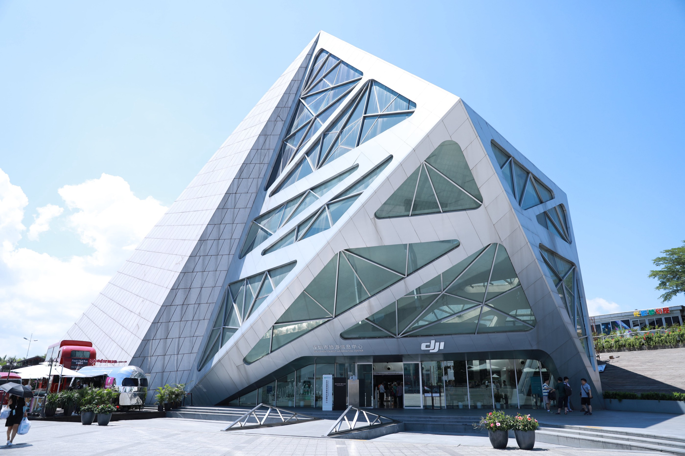
Criada em 2006, a Dà-Jiāng Innovations Science and Technology, também conhecida como DJI, é líder mundial no mercado de veículos aéreos não tripulados (drones) civis e comerciais. Entre seus principais drones, estão o Mavic Pro Platinum e o Phantom 4 Pro.
Premiada em 2017 com o Emmy de Tecnologia e Engenharia, foi reconhecida pela excelência capaz de fornecer aos diretores e cineastas uma plataforma acessível na criação de imagens aéreas de baixa altitude. A tecnologia DJI abriu novas possibilidades criativas e facilitou a produção diferenciada de filmes e programas de TV.
Além disso, a DJI projeta e fabrica plataformas de voo, câmeras, sistemas de propulsão, estabilizadores de câmera e sistemas de controle de voo. A empresa hoje tem escritórios em todo o mundo moderno, como Estados Unidos, Alemanha, Holanda, Japão e Coreia do Sul, entre outros.
BYD
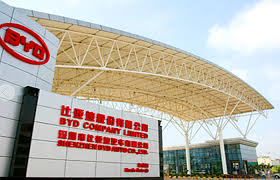
A BYD é uma gigante global na produção de veículos 100% elétricos, além de baterias recarregáveis e sistemas de armazenamento de energia. Trata-se da maior fabricante mundial no segmento, que iniciou também a produção de trens elétricos com custos 80% menores do que os tradicionais.
Ao mesmo tempo, a empresa se posiciona em todo o mundo como a segunda maior fornecedora de componentes para aparelhos como celulares, tablets e laptops. Na verdade, 30% das baterias de celular do mundo são produzidas pela BYD